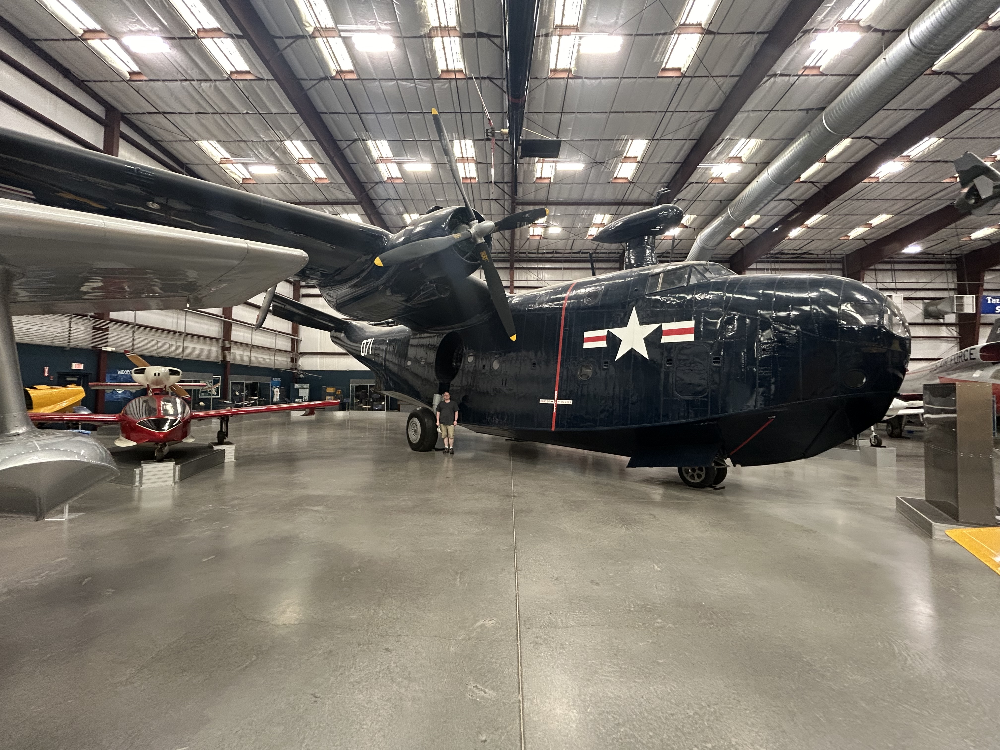
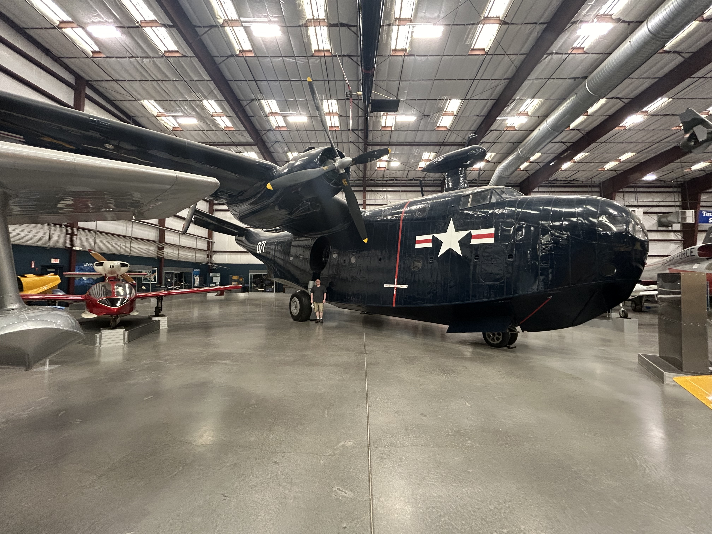

I found a love for coding while in middle school. I was accidentaly put into a class where we used scratch, the issue was that I was nowhere near ready for that class, after they moved me out of it I was curious about it, I was able to do some simple things, but I wanted to know more, so I started taking classes on computers in high school, but it was in college that I really started having fun with it! I had only really been using html and notepad, when I started using VS Code and Python I felt like I'd entered a new world! I was amazed that I didnt have to maticulouly look through the code for a missing square bracket, now it would just underline it like in word! I kept learning new things and new languages and ultamately I'm where I am today, I'm still learning new things, and though I know that I won't be able to understand everything there is to know, I can still learn all that I can.
 
